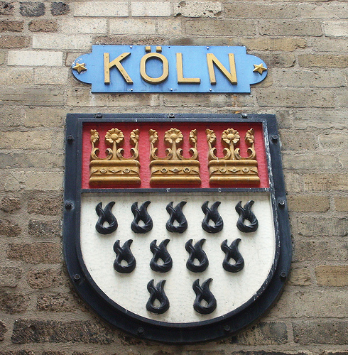
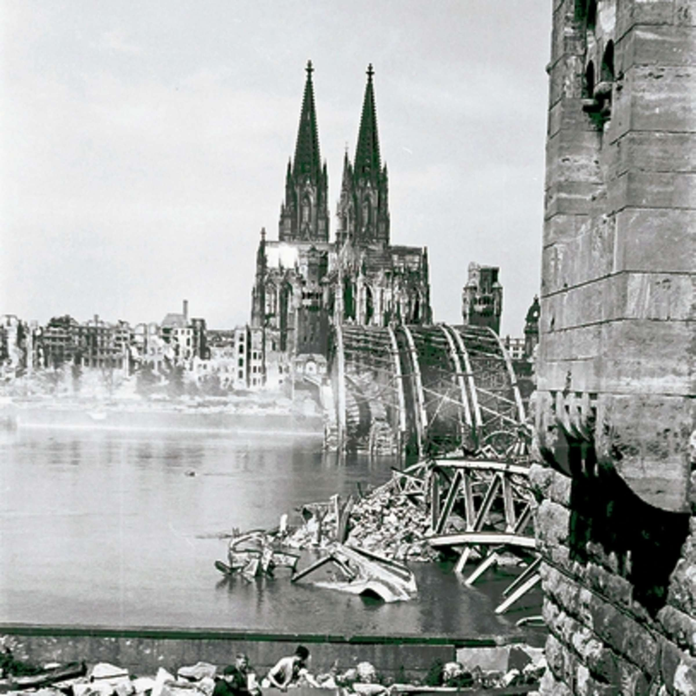
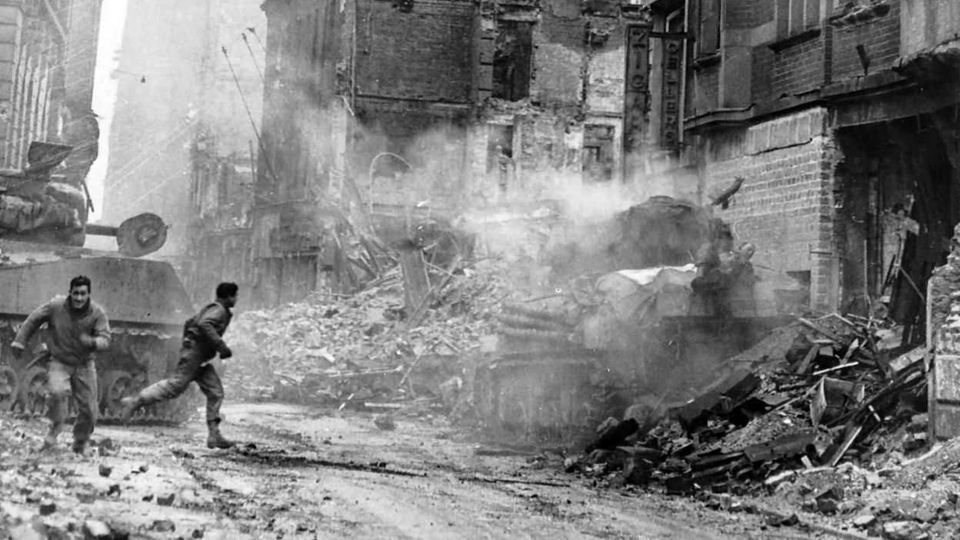
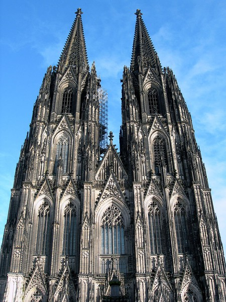
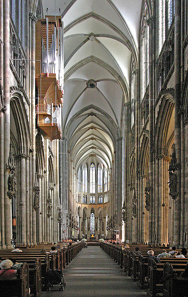

Historia de Colonia
Kölner Geschichte
María Ballesteros Cózar
Fundamentos de la cultura alemana
Índice de contenidos:
La ciudad de Colonia - Köln
Antes...
Ahora
Introducción a la ciudad
Historia
Escudo
El escudo de la ciudad muestra:
En la parte superior tres coronas que simbolizan los Tres Reyes Magos (patronos de la ciudad), enterrados en el sarcófago de oro de la catedral. En la inferior, once llamas que representan las 11.000 vírgenes martirizadas junto a Santa Úrsula, patrona de Colonia.
|  |  |
La joya de Colonia: Kölner Dom
La Catedral de Colonia, símbolo de la ciudad, es la mayor de Alemania y una de las catedrales más notables del mundo; merece ser admirada por varias razones.
Estilo Gótico
Pero la verdadera razón por la que la Catedral de Colonia produce admiración es por la bellísima armonía del conjunto que la convierte en una espléndida obra del gótico.
Historia de su construcción
- Aunque la finalización de las obras de la Catedral tal y como la conocemos corresponden al siglo XIX, su historia se remonta mucho tiempo atrás.
- La primera piedra se colocó el 15 de agosto de 1248, pero tuvieron que pasar 632 años para que finalizara su construcción, completándose en el año 1890.
Interior de la Catedral de Colonia

Kölsch, el dialecto de Colonia
¿Qué se habla en Colonia?
- El "Kölsch" es un dialecto que incluso para muchos alemanes es incomprensible. Millones de personas llegan a Colonia en época de carnaval y se sorprenden con este peculiar lenguaje.
- Allí se celebra el carnaval más importante y multitudinario del centro de Europa, donde se despliegan multitud de colores vivos, carrozas y desfiles que llenan sus calles de alegría e ilusión.
Texto escrito en Kölsch

El corazón late en el barrio
Carnaval de Colonia
La Capital de los mercadillos navideños
- A finales de noviembre, las calles de Colonia aparecen ya cargadas de luces navideñas y en ellas se entremezclan la alegría de la gente con la música de los villancicos.
- Esta atmósfera se extiende por toda la ciudad con mercadillos navideños dispersos por el centro.
- En Navidad, la ciudad de Colonia desprende una fragancia única.
- Son los olores a vino caliente especiado (Glühwein), crepes, almendras garrapiñadas, salchichas asadas, chocolate caliente…los olores de la Navidad alemana.
Bajo la imponente silueta de la Catedral de Colonia se halla el mercadillo navideño más grande e importante de la ciudad, que queda totalmente cubierta por miles de luces navideñas y olor a vino caliente.
Adéntrate en la navidad de Colonia
con el siguiente vídeo...
Viel Spaβ!